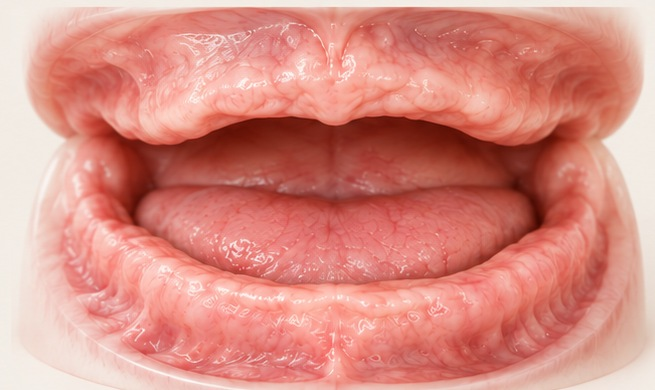
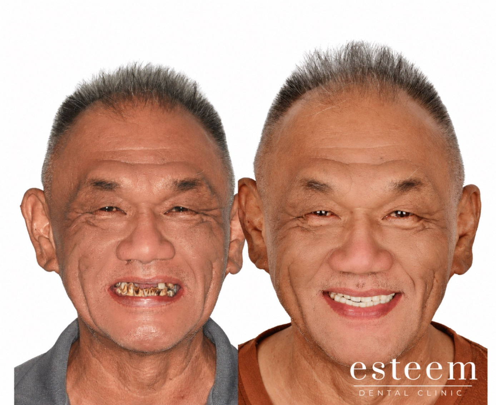
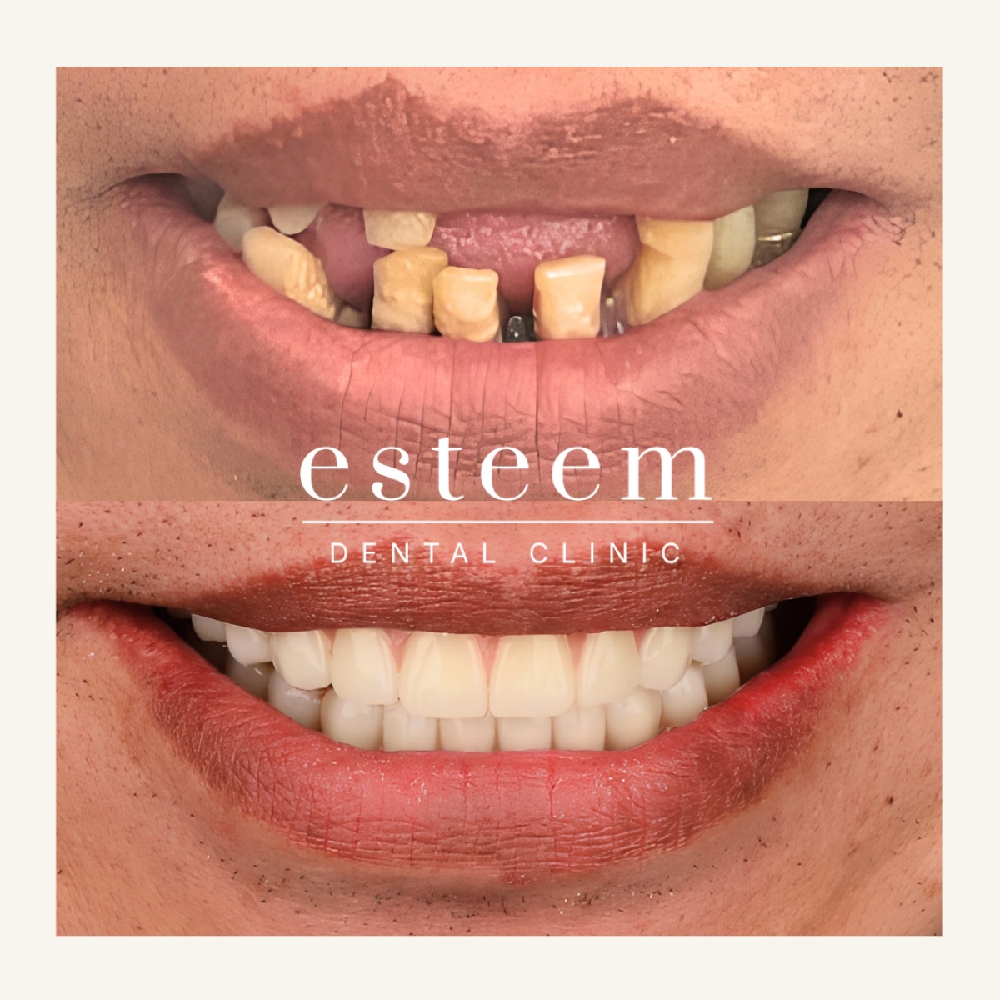
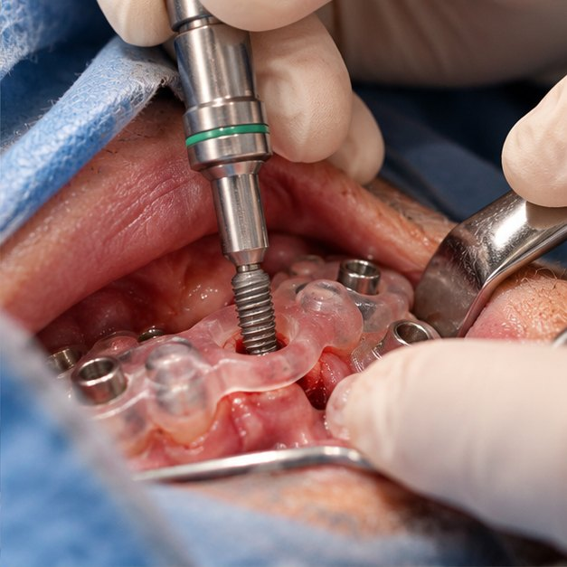
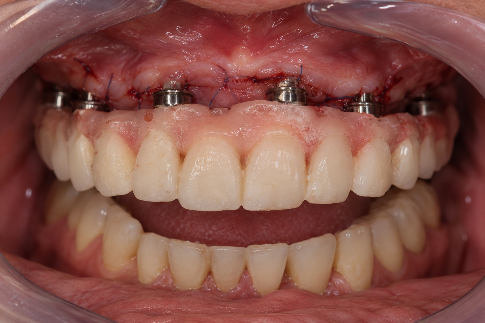

Many missing teeth
When most or all teeth in the upper or lower jaw are missing, All-on-X provides a fixed replacement for the missing teeth.

If you're considering All-on-X, this guide explains who it may be suitable for, what treatment involves, and the important questions to ask before making a decision.

A detailed assessment can help determine whether All-on-X is suitable for your needs, health and treatment goals.
When most or all teeth in the upper or lower jaw are missing, All-on-X provides a fixed replacement for the missing teeth.

When dentures move, rub, or make eating and speaking uncomfortable, All-on-X offers a more stable and fixed option.

When most teeth are badly damaged, loose or keep causing problems, it may be time to consider whether saving or replacing them is the better long-term option.

All-on-X is a full-arch dental implant solution designed to replace all the teeth in the upper or lower jaw with a connected row of fixed replacement teeth supported by several dental implants. Rather than using one implant for every missing tooth, the implants are carefully planned to support the entire arch.

Implants sit in the jawbone and support a connected set of replacement teeth. The implants, your new teeth and your bite need to be planned together — not as separate parts.
Titanium dental implants are placed in the jawbone to support the connected replacement teeth. During healing, the surrounding bone integrates with the implants to provide a stable foundation.
The replacement teeth are made as one connected full-arch restoration. High-strength zirconia is used for its strength, durability and natural appearance.
The “X” refers to the number of implants used to support the full arch. Commonly, four or six implants may be used, depending on the individual treatment plan.
For suitable patients, a fixed full-arch restoration may offer practical benefits. The result depends on your oral health, the design, healing and ongoing care.
A stable, fixed restoration makes everyday chewing more comfortable than with a loose or uncomfortable denture.
Supported by dental implants, the teeth remain fixed in place and are not removed each day like a removable denture.
With less movement than a loose denture, a stable, fixed restoration helps you feel more comfortable and confident when speaking and socialising.
The shape, arrangement and appearance of your replacement teeth can be planned around your face, smile, speech and bite.


All-on-X is more than a single procedure. It is a carefully planned journey from your first assessment and implant placement to healing and your final teeth.

A clinical examination, CBCT scan and digital scans provide a detailed view of your teeth, gums, jawbone and bite. These records allow the implant positions and replacement teeth to be planned together before surgery, with your anatomy, function and final restoration considered from the beginning.

The implants are placed during one surgical appointment. A custom-made surgical guide or dynamic navigation may be used to help the dentist place the implants according to the digital plan with greater precision.

When conditions allow, temporary fixed teeth can be fitted on the same day as implant surgery, so you can have fixed teeth while the implants heal.

Over the following months, the implants integrate with the surrounding bone while the gum tissues heal and adapt.
When healing and clinical checks indicate readiness, the final full-arch restoration can be fitted. Its design considers appearance, bite, function and cleaning access. Regular professional maintenance remains important after treatment.
If you're considering All-on-X, these are some important questions to discuss with your dentist.
Suitability depends on your remaining teeth, gum health, bone volume, bite and general health. A clinical examination and CBCT scan help your dentist assess the options.
Bone loss does not automatically rule out treatment. Depending on your anatomy, options may include bone grafting, alternative implant positions or a different treatment approach. A CBCT scan helps assess the available bone and determine which options may be suitable for your case.
Treatment usually takes place over several months. In suitable cases, a fixed temporary set of teeth may be fitted on the day of surgery, followed by the final restoration after the implants have healed and integrated with the bone, usually after around three months, depending on the individual case.
Surgery is usually performed with local anaesthesia, so you should not feel pain during the procedure, although you may feel pressure or movement.
Your new teeth can be designed around your face, smile, speech and bite. Your gums, lips and the amount of bone available can also affect the final result. Ask to see similar cases and discuss what may be achievable for you.
Daily cleaning around and beneath the bridge is essential. Your dentist may recommend a soft toothbrush, interdental brushes, super floss or a water flosser, together with regular professional reviews. The design should allow you to clean effectively at home.
Implants and the bridge are different components and may have different lifespans. With good hygiene and maintenance, implants can provide long-term support, but the bridge may need repair or replacement over time. Bite forces, smoking, health, materials and ongoing care all affect longevity.
Like any surgery, All-on-X has risks. These may include infection, bleeding, nerve or sinus problems, implant failure, changes to your bite or speech, and the need for future repairs. The risks are different for each person. Your dentist should explain which risks apply to you before you decide to proceed.
A consultation can help you understand the treatment, suitability and alternatives, with no obligation to proceed with surgery.